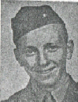

RAIDER PLATOON: Sometime during summer of 1943, the powers that be decreed that one platoon from each battalion was to receive special training to qualify the chosen platoon to conduct raider type actions. The first platoon of Company C was designated as the "raider platoon' for First Battalion, 23rd Marines. At that time 1stLt Garfield Randall was the Platoon Leader and Cleveland Leonard was the Platoon Sergeant. I believe I was one of the Squad Leaders although I don't have any clear memory of that.
My memory says there was no specific schedule or plan to achieve the goal of making us a "qualified" raider organization. I think that one or two days a week we broke away from the regular company training schedule in order to do "special training". Lt Randall would talk to us about subjects that he thought were appropriate and would devise some platoon problems for us to run. In addition, some time was taken up with trivia, I remember one session where we had a lengthy discussion about what Randall's battle field "handle' would be. Most of the platoon favored using "Garfield", his first name, as his handle. In the end, Lt Randall vetoed that suggestion and decreed that his handle would be "Randall".
The one event that is still fairly clear in my mind was a night landing at Aliso Canyon beach with rubber boats. We boarded an LCI (Landing Craft Infantry) after dark and were taken out to sea until Aliso Canyon was just a dim glow on the eastern horizon. We were dumped out in about 6 rubber boats (7 or 9 men to a boat). The LCI then departed leaving us in the empty ocean. We sort of rendezvous and then took off as a group paddling for the distant beach. It was a windy night with fairly high waves so our formation was quickly dispersed and we found ourselves alone. The distant glow of the beach was our guiding light otherwise it would have been a real disaster since we didn't have a compass to tell us the direction. Most everyone soon got sea sick which greatly impeded our progress. I was sitting in the bow of our boat and not engaged in paddling the boat (this reinforces my opinion that I was a Squad Leader since otherwise I would have been manning an oar). After a long and difficult trip we finally reached the shore and "Lo and Behold" we were right in the middle of Aliso Canyon. A couple of boats were already there and the others soon arrived. So what could have been a disaster had a happy ending.
My memory says the idea of a "raider" platoon just sort of fizzled out. Shortly after our rubber boat landing, we quit breaking away from the rest of the company for special training and nothing more was heard about "raider" training.
Assignment on Saipan: Arthur O Erickson was the Assistant Platoon Sergeant of the 1st Platoon when we invaded Saipan. He became the acting Platoon Sergeant shortly after we landed on June 15, when Platoon Sergeant Leonard was evacuated. On June 19 Sgt Erickson became the acting Platoon Leader when Lt Randall was wounded and evacuated. During the next two weeks he ably led the platoon, but during that time both his hands became badly infected. Both hands were completely bandaged and it appeared that he was wearing mittens. He could no longer load or fire his weapon and it was difficult for him to eat. Consequently, in early July around the 2nd or 3rd, Capt Eberhardt forced him, against his will, to seek treatment. Sgt Erickson was evacuated and did not return, I became acting Platoon Leader for the last few days of the operation. The official Marine Corps muster shows Sgt Erickson going to Tinian, but that is an error. On July 20, 1944 we received a 1st Lt Walter Donahue on loan from the 2nd Marine Division. He became 1st Platoon Leader and I reverted to acting Platoon Sergeant which were the positions we both held throughout the Tinian campaign.
The day Saipan was declared secure: By July the 9th the 23rd Marines had been squeezed out of the line and became division reserve as the Island of Saipan narrowed near the north end. Company "C" was dug in near the west coast of the island perhaps a couple of hundred yards from the beach. Since the company was not tied in with any other unit we formed a large circle, as we had done many times before, and dug in such that we had all around protection, similar to circling the wagons in the old west. Sometime during the day, Capt Eberhardt called me to the Company CP (Command Post) and told me to take my platoon (the 1st Platoon) down to the beach and find a place for the Company to go swimming. We moved out from the Company area in a skirmish line. As we approached the beach we could see that there was underbrush back from the beach a ways. The line of underbrush was about 20 or 30 yards wide. We could see the white sandy beach through breaks in the vegetation. As we reached the underbrush we came under fire and Gene Dominguez, who was a few yards ahead of the skirmish line, was killed. We hit the deck and returned fire although we couldn't tell where the fire came from. After a few minutes of trying, in vain, to locate the source of the fire, Ed Day said he was going to get Dominguez. As soon as he stood up he was killed. We now had two dead and still hadn't seen any Japanese nor could we tell where the fire was coming from. Within moments after Ed Day was killed, Capt Eberhardt arrived with another platoon and the mortar section. The mortar section lobbed a few rounds into the area and we recovered the bodies. We then withdrew back to the Company area and the plans to go swimming were abandoned. During the whole episode, no one saw any Japanese soldier nor did we determine the location(s) of the shooters. Since the area was well behind the front lines artillery fire could not be called into the area.
Gene Dominguez and Ed Day were among the last three Company "C" members killed on Saipan. Although I am not aware of the details, Steve Cook was hit on July 9 and died of his wounds on July 11. The 9th of July was also the day that Saipan was declared "secured". An island was declared "secure" when the senior commander determined that organized resistance had ceased. However, those of us who were still on an island that was declared "secure" knew that they could still be very dangerous places.
After Saipan was Secured: A few days after Saipan was secured the 23rd Regiment was moved to the south end of Saipan where we spent 10 or 12 days without any particular duties that I recall. We received mail from home and were allowed to just rest. I don't recall what we did about security but I believe we could sleep through the night without being awakened to stand watch every two hours. After being deprived of sleep for a month it was a luxury to sleep uninterrupted for several hours at a time even though it was still on the hard ground. We were allowed to go swimming several times which was the nearest thing to a bath we had since the beginning of the campaign. I discovered that salt water had medicinal properties, the back of my hands had become infected during the last few days of the campaign and a couple of times in salt water cleared up the infection. I believe our food was C rations and sometimes 10 in One rations during this period. For the uninitiated, C rations were an individual meal (not gourmet) while the 10 in One rations were intended to feed a squad and required that we be able to build a fire to cook certain things. My favorite in the 10 in One rations was the canned bacon that probably contributed to my clogged arteries in later years. To replenish our seriously depleted ranks of non-commissioned officers, a lengthy promotion list was published while we were in our rest period. I only remember one person that appeared on the list, I was promoted from Corporal to Sergeant. I think a Sergeant made 78 dollars a month in those days.
A Bizarre Incident. There were two Charles Jones' in Company C, Charles Jones, Jr and Charles D Jones Jr. Charles Jones Jr was KIA on July 4, 1944 and by some unfortunate mistake the family of Charles D Jones Jr was notified that their son had been KIA. This came to light while we were in our rest period in the south of Saipan. Charles D Jones' brother who was on Saipan in an Army unit came to our Company area seeking information on how his brother had died. The first person he saw was his brother, alive and well. So far as I know, the mistake was made some place in the chain of command above Company C. In due course, I assume the official records were corrected and the right family notified. I know from personal experience those problems occurred, when I was later wounded on Iwo Jima my family was never notified.
Prelude to Tinian: I don't remember when we were first told that we would be attacking Tinian. Colonel Jones, our regimental CO, assembled most of the regiment a few days before the invasion of Tinian to tell us what was going to happen. This formation was at the extreme south of Saipan. He had a loudspeaker set up and the regiment formed a semi circle facing Colonel Jones. He told us we were going to capture Tinian. That is my first memory of our tasking to attack Tinian. We were facing south so we could see Tinian about three miles away across the channel. He pointed out the artillery lined up hub to hub in front of us and which would be supporting our invasion. As a matter of fact, the guns were firing as he spoke. I remember him saying that there were 156 guns lined up there and they would be firing softening up fire day and night until we landed. Some of the smaller caliber pieces could only reach the north half of Tinian, but there were several battalions of 155mm guns which could reach targets anywhere on the island. A reading of history says there were 17 battalions of artillery on Saipan. Four battalions were 75mm Pack Howitzers which guns were not suitable to support the attack from Saipan. The four battalions of 75mm Pack Howitzers accompanied the 4th Division to Tinian as part of the invasion force. 13 battalions remained on Saipan to support the landing. These 13 battalions were placed under the command of Army Brigadier General Harper who reported directly to Major General Schmidt the Landing Force Commander. After the invasion of Tinian most of the artillery moved to Tinian as the occupied ground increased, but two battalions of 155mm guns remained on Saipan throughout the campaign.
Struck by a Bug: A couple of days before the scheduled landing on Tinian, a large number of Company C members came down with severe case of diarrhea. How we all contracted it is a mystery since we were not eating in a communal mess hall, but we all came down with it at about the same time. In any event, it would have been a serious problem to cope with during the landing. I remember lining up with many others from Company "C" at the battalion aid station while the Battalion Surgeon supervised as we each drank a shot glass (about one ounce) of a whitish liquid and then swallowed 2 or 3 large white pills. I don't know about others, but I was bound up for days.
The first day: The 23rd Marines were in division reserve for the Tinian landing. The First Platoon landed in two tractors during the early afternoon of July 24, 1944. Lt Donahue who had joined us on July 20, 1944 commanded one tractor and I the other. My memory is that we made the long run to beach with just the two tractors abreast and maybe 50 - 75 yards apart. Once ashore we were soon reunited with the rest of Company C. We were not placed in the line the first night but dug in behind the front lines as part of Division reserve. The Japanese launched several attacks on the front lines during the night. We could hear the firing from both our and Japanese weapons but the Japanese were never able to break through our front lines. So we spent a wakeful night waiting for an attack in our area that never came. History tells the first night was a disaster for the Japanese. They lost about one third of their total force during the night as well as most of their tanks.
The Drive South: The next morning we came out of reserve and were committed to the attack. That was the beginning of several days long advances against light opposition. Each day for the next several days we had a tank attached to the platoon to support our attack. The tanks had a 75mm cannon as their main gun as well as two 30 caliber machine guns. There was a telephone mounted on the back of the tank. The phone handset had about a 50 foot handset cord so we could communicate with the tank commander without undue exposure. During our forward movement either Lt Donahue or I would use the phone to call machine gun fire on likely concealment areas or, if the target looked menacing we would call for a couple of 75mm rounds. That part of Tinian was flat and open so the tank foot soldier combination worked very well. When we drew fire we would reply with the tanks machine guns as well as with our individual weapons. We would literally run over the Japanese defenders. The Japanese were well aware of our tactics and since at that point they did not usually have anti tank guns available they tried to disable the tank with an explosive charge placed in the tank track by an individual soldier. This tactic entailed a Japanese soldier lying in concealment until the tank was very close, he would jump up and make a dash for the tank. If successful in placing the charge it would knock the track off the sprocket immobilizing the tank. This tactic was attempted a couple of times against the tank attached to the first platoon, but on each occasion the Japanese soldier was spotted and killed before reaching the tank.
Final Defense Line: Late in the afternoon of July 30, Company C reached the end of the flat ground we had been advancing across. As we started up the slope that led to a cliff looming over us, we suddenly drew a hail of small arms fire. We were immediately ordered to pull back a hundred yards or so and dig in for the night. We just knew that we had come under fire, but I'm sure the senior commanders realized that they had found the final Japanese defense line. What followed during the night and early morning of July 31 was the most concentrated bombardment of any position that I had witnessed during the war. The bombardment started slow, but built in intensity as the night wore on. By midnight the barrage had turned into a continuous deafening roar and the high ground and cliff line above us was a solid mass of orange flashes from exploding shells. Adding to the surreal scene were flares fired from supporting destroyers that illuminated the battlefield throughout the night. At dawn the barrage intensified further and more than a 100 planes joined including a couple of flights of Army Air Corps two engine (B25) horizontal bombers. That was the only occasion during the war that I saw multi-engine horizontal bombers employed in close support of ground troops. Just before we jumped off to attack the cliff, 12 or 15 rocket trucks fired their rockets against the cliff line. My memory says these trucks carried 96 4.2 inch rockets that could be fired in a matter of seconds. Thus more than a thousand rockets hit the high ground and cliff line in just 10 or 15 seconds. A reading of history says there were two battle ships, three cruisers and 15 destroyers available to participate in the bombardment. There were 11 battalions of artillery ashore that took part in the delivering fire on the target.
We jumped off in the attack at about 8:30 AM and my memory says we reached the top of the high ground about noontime. Although I suppose the official description of the action would say we had "light" causalities, three of our eight causalities on Tinian occurred on the morning of July 31. Derald Fisher was killed in action. He had joined the company on July 28 and no one now remembers anything about him (see our KIA list for a chronology of Derald's time in Company C). Orvel Johnson and Lee Wagner, both from the first platoon, were wounded that day. Lee's wounds were minor and he returned to duty later in the day. Orvel's injuries were much more serious. He was evacuated and did not return to Company C (see Orvel Johnson's memories for a detailed account of his last day in combat). The July 31 attack marked the end of large scale resistance by Tinian Japanese defense forces. The island was declared secure the next day, August 1. However, as was customary with the Japanese, small units and individuals continued to resist.
Banzai attack after the island declared secure: On August 2 (my memory) we reached the final position that we occupied on Tinian. It was maybe a 100 yards in front of a cliff that led to the southernmost plateau on Tinian. The center of the first platoon position straddled a road that was probably the main north-south road in that part of Tinian even though it was a single lane dirt track. We had a machine gun section attached to the platoon and had positioned them so they had a clear field of fire down the road. Although we were probably half strength I believe we still had nine BARs (Browning Automatic Rifles) in the platoon. In any event we had a lot of firepower for a half strength rifle platoon. Lt Donahue and I were dug in at the edge of the road about 10 or 15 yards behind the platoon line. Since the island had been declared secure the day before, there was no artillery fire. With no flares to illuminate the battlefield the night was pitch black
A couple of hours before dawn, the darkest part of the night, there were suddenly shouts of "bansai" and grenades started exploding in front of and behind our platoon line. Lt Donahue and I could see nothing except the flash of exploding grenades from our position. However, we were superfluous to the outcome anyway. The platoon and the attached machine gun section reacted immediately and it was over so fast that we were not sure what had happened. After all was silent everyone stayed put until dawn at which time several of us went out to check out the situation. We found perhaps a dozen Japanese bodies about 25 yards in front of our lines. It wasn't quite over, while we were inspecting the bodies, one Japanese soldier suddenly came alive and tried to toss a grenade at us, but someone shot him before he got the grenade armed. That ended the last desperate attempt by remnants of the Japanese defenders to break through our line. No one from Company C was hurt.
Beer Party on Tinian: I don't remember the date, but at some point after the island was secure Company C held a beer party. My memory says that Capt Eberhardt formed the company in a large circle where we all sat on the ground and were each given a couple of bottles of Japanese beer (I don't remember what, if anything, the teetotalers in the company received). These were large bottles of Japanese beer, something just a little less than a quart. In any event, there was enough beer to make most of us very happy indeed. So we laughed and talked for a couple of hours and put the war in the back of our minds. It was my introduction to Japanese beer. I later spent many years in Japan where I acquired a taste for Japanese beer, I came to prefer it from popular American brands of beer.
Guarding surrender broadcast: A few days after Tinian was declared secure (probably the 3rd or 4th of August), the First Battalion, 23rd Marines was sent down to the plateau to provide security for an operation intended to secure the surrender of the remaining Japanese soldiers and civilians. The plateau ended at water's edge where there was a drop of 150 to 200 feet to the ocean and rocks below. The authorities had a loudspeaker set up on a jeep and interpreters and previously captured Japanese were preparing to broadcast urging Japanese soldiers and civilians to surrender promising food, water and medical treatment. The First Battalion, including Company C, formed a large circle around this group to provide them with protection. Company C occupied a place in this protective circle that faced towards the ocean. When the broadcasting got underway, a few Japanese soldiers appeared and several walked to the edge of the plateau and jumped off presumably killing themselves on the rocks below. Some civilians began to appear, but it seemed the Japanese soldiers were preventing them from giving themselves up. A group of 25 or 30 soldiers and civilians, including women and children, gathered in a circle a 150 or 200 yards in front of us. They formed into a circle kneeling or squatting and facing inward. Suddenly in the center of this group there was a tremendous explosion causing bodies and body parts of men, women and children to fly 20 or 25 feet in the air and then rain back down on the plateau. Even though our weeks on Saipan and Tinian had made bizarre events commonplace to us, I'm sure we were all shocked by this event. The explosion appeared to be a watershed event. Shortly afterwards, many civilians and a few soldiers started giving themselves up. No Japanese soldier made any threatening moves towards us and we did not fire a shot during our protection detail.
Pay in our Foxholes: We had received no pay since leaving Maui in May. Of course, it didn't matter since we had no place to spend money. We knew that our days on Tinian were numbered when a young Lt (unknown to us) came into our Company Area and went foxhole to foxhole and paid each of us 20 dollars. I would guess this happy event occurred about the 8th of August.
Meals and water on Tinian: I believe that, for most of the Tinian operation, our food consisted of two K-Rations per day. For the uninitiated K-Rations came in a box that on the outside looked like an over sized box of cracker jacks except the box was a military olive drab color. The main course in the box was a small can (probably about three ounces) that contained some sort of meat or egg product such as hash or eggs with bacon bits. I believe the box also usually contained a small bar of semi-sweet chocolate, some sort of crackers, some powder to mix with water to make a drink such as lemonade and a small package of cigarettes (the package contained either two or four cigarettes), my memory fails me. For those of us with a nicotine habit, the cigarettes from our K-Rations were not sufficient so we were not above searching the pockets of dead Japanese soldiers looking for cigarettes. There may have been some other ingredients in the rations that I can't remember. For growing boys, which is what most of us were, it was pretty skimpy fare.
The water we received during the Tinian operation came in 5-gallon cans, the cans appeared to be new so I assume they had been filled with water in the states, maybe at the manufacturing plant. The water that came out of these cans smelled bad and tasted worse. Most of us tried to make the water taste better by mixing it with our powdered drink product from our K-Rations, but this just produced terrible tasting lemonade or whatever. The only decent liquid drink that I remember on Tinian was the Japanese beer we drank at our company beer party after the island was secure.
Food and water on the Young America: Finally on August 10 we moved to the port of Tinian Town to go aboard ship for our return to Maui. I don't remember whether we hiked from our last defensive position or whether we were trucked. I do remember the ship was anchored offshore so that we were taken out to the ship (the SS Young America) in landing craft and had to climb onto the ship via cargo nets. We were carrying a lot of gear and my memory is of a very difficult climb up a cargo net to get aboard. I don't know where we acquired all the stuff we were carrying, we certainly did not carry anything like that on the battlefield. The SS Young America was a merchant marine vessel crewed by civilians. It had some antiaircraft guns mounted on it and these were manned with U. S. Navy personnel.
We departed for Maui the next day and arrived at Kahalui, Maui on August 24. Life on the SS Young America was an improvement over sleeping in a foxhole, eating K-Rations and drinking putrid water. However, it wasn't perfect. We had so many people aboard that we only received two meals a day. Showers, as usual aboard troop ships were salt water, but for most of us that was our first bath since before D-Day on Saipan, almost two months. Drinking water was in such short supply that guards were posted at drinking fountains to prevent individuals from filling their canteens with water. The lines to get a drink of water were long so it usually took several minutes wait to reach the drinking fountain. In due course we arrived back at Maui and our tent camp on the rainy side of the island, ready to prepare for whatever the future held for us. There were a lot fewer of us returning than the number that departed about three months earlier.
Last day in Company C: February 26, 1945 turned out to be my last day in Company C, 23rd
Marines. I was a charter member of Company C so it had been a long journey from the the hot summer days of July 1942 in New River, N. C.
where we were activated to the bedlam and chaos of Iwo Jima in February 1945. The evening of February 25, 1945 Company C dug in at
the edge of the second airfield. The company line was just short of the runway and the the unit leaders dug in at the bottom
of the fill embankment which was probably about 15 feet lower than the airport runway. I dug in that night with Homer Booth
who was the Section Leader of our attached Machine Gun Section. Lt Burns the Platoon Leader was dug in to the right of us, I don't remember
who his foxhole partner was. Sometime after midnight Homer woke me (I was on my two hour sleep shift) and whispered to me that there was
a Japanese patrol at the top of the embankment, but he couldn't fire at them because his Thompson Sub-Machine Gun was jammed. I could see three
Japanese clearly visible by the light of the flares that constantly illuminated the battlefield. It was easy to tell the
difference between Japanese and US personnel because of the distinctive shape of their helmets. My carbine had so much sand
in it that I could not pull back the bolt to load a round into the chamber so we didn't have a workable weapon between us. We then
began to wonder, in whispers, why no one else had seen them. At about that time they were spotted and there was a flurry of
fire that killed two of the three the last one jumped up and came charging down the embankment shouting banzai and swinging a saber.
He headed for our foxhole so we both got out of the hole to meet him, I got my carbine turned around and was holding it by the
end of the barrel. When he got close to me he swung the saber at me, fully intending to behead me, but I ducked and swung my carbine
with all my strength. He missed but I didn't, the saber went over my head (I could hear the whoosh and feel the air). My
carbine hit him just below his helmet line with enough force that the stock broke off at the pistol grip. That took all the fight
out of him, but Homer and I still took a few more whacks at him. By that time a number of people were out of their foxholes and
someone shot the Japanese soldier which was probably not necessary since I believe we had already beaten him to death. Capt McDaniel
came from the Company CP to get everyone settled down and back in their foxholes. We settled back in our foxholes and Homer cleaned
his Tommy Gun and got it clean enough that he could feed a round into the chamber. I, of course, no longer had a workable weapon.
Not long after dawn Capt McDaniel came into the platoon area to brief Lt Burns and myself on the day's attack plan. He was
carrying two carbines of which he handed one to me saying "You may need this today". We could guess the plans for the day
since the area directly across the airport runway had been under heavy bombardment by artillery and Naval gunfire for some time.
We jumped off a short time later with all three platoons abreast with second platoon on the left, first platoon in the
center and third platoon on the right. When we jumped off, we double timed across the airport runway since no one wanted
to get pinned down on the runway where there would be no cover. As we crossed the runway the artillery and Naval gunfire
lifted and started firing couple of hundred yards ahead of us. As soon as we (the first platoon) were across the runway some
of us saw the Japanese coming out of a large emplacement and presumably headed for their individual spiderholes. They were
taken under fire, but their exposure was so brief that no discernable damage was done before they got under cover and out
of sight. My estimate is that the platoon suffered about 20 killed or wounded in the next few minutes. The slaughter stopped
when we were able to get our attached Machine Guns in action and they were able to pin down our unseen enemy. The artillery and
Naval gunfire was called back in about 50 yards in front of us. Carrier planes came in on bombing and strafing runs also
maybe 50 or 60 yards in front of us. Unfortunately none of this was of any direct help since our enemy was no more than 25 yards in
front of us.
While Lt Burns was working to get our casualties out, Capt McDaniel told me we we going to pull back across the airfield
so they could call artillery fire into the area we were occupying. He told me to send someone over to tell the third platoon
to pull back across the airport. I told Richard Winegar to go tell the third platoon to pull back and he should stay and come
out with them. Richard Winegar was killed while trying to find the third platoon (I didn't know this until later). Both
Capt McDaniel and I thought the third platoon was on our immediate right flank. However, they hadn't encountered the Japanese
positions as soon as the first platoon and when we were pinned down they continued to move which opened up a large gap between us.
We pulled back to about the same position we had occupied when we jumped off a couple or three hours earlier. Shortly after
we got back Lt Burns was hit with machine gun fire and evacuated . Some time later Capt McDaniel told me that the third platoon
had not came out and I should take a couple of men and go bring them back. I took Herb Johnson and one other whom I no longer
remember and we went back across the runway. I still believed we would find the third platoon just to the right of the area
we had occupied. We angled to the right in crossing the runway, thinking we would be just behind the third platoon. Of course.
that was where there were a lot of Japanese soldiers, but no one from the third platoon. We came under fire immediately, I
was hit in the left forearm and while trying to find a shell hole to get some cover I was hit a second time in the upper abdomen.
Both hits were penetrating and neither hit a bone. I staggered into a 16 inch shell hole so I was under cover. I didn't see
what happened to Herb Johnson or the other man. I next saw Herb on a ship load of wounded bound from Saipan to the Naval hospital
in Hawaii. Herb had been hit in the head and he didn't know who I was nor did he know what had happened. In recent years, I made
Internet searches for Herb without results. I have never been able to remember who the third person was so I don't know
what happened to him.
I would judge that it was about noon time when I was hit. So I found myself lying alone and in shock at the bottom of a shell
hole. I could see that my dungarees were soaked in blood and I, of course, didn't feel well. My first thought was that the
Japanese would come into the shell hole to finish me off so I got ahold of my carbine, laying a few feet away, and could see
there was no magazine in it. It had fallen out I know not where. It was at this point I found out what bad shape I was in,
I tried to insert a loaded magazine into the carbine, but didn't have the strength to lock it (a very simple procedure). So
I lay in the hole the rest of the day, sometimes unconscious and other times conscious. About mid afternoon a Navy Corpsman
suddenly jumped into the hole, I first thought it was a Japanese, put a couple of bandages on me and left. I don't know who
he was or where he came from or where he went The bandages slowed the bleeding which was probably a lifesaver. I lay the
rest of the afternoon drifting off into never never land mixed with periods of being awake and worrying that the Japanese
would find me before someone from Company C did. At dusk just as I came out of one of my dreamy periods I heard someone say
"Its Lewis". I looked up and it was Ed Rajkowski with several others carrying someone in a poncho. Ed was in the first
platoon, but when the gap opened he ended up with the third platoon. They were carrying the Third Platoon Leader who had a
broken leg (I believe it was a Lt Clemmer who had joined the company on February 24th). Ed told me they had seen
Richard Winegar's body. There was a discussion about how they were going to get both of us out. It had been five or six
hours since I had been hit and by then I was too sick to have any input to the discussion. Finally Lt Clemmer asked for a
rifle and he used it as a crutch. They put me in the poncho and we started out immediately coming under fire. They dropped me
and returned fire and that is the last thing I remember until I came to on a stretcher on an ambulance jeep headed for the beach.
I'm sure if those folks hadn't found me and carried me out, at considerable risk to themselves, my bones would still be bleaching
in that shell hole.
When I got to the beach, I was put in hospital tent on the beach and they began admistering whole blood. I was there several
hours and most of the time they had an IV in my arm dripping in whole blood. The beach was under mortar fire and every now
and then when rounds started falling close, the staff would leave to get in foxholes or trenches. The patients just had to
stay in place and hope they didn't get hit. There were no lights in the hospital and while I knew there were other patients
I couldn't really see them. After several hours, I guess it was probably past midnight, I was carried down to the beach and
put on an LCM (Landing Craft Medium). As soon as the deck was covered with stretchers we got underway and went out probably a
couple of thousand yards and tied up along side an LST (Landing Ship Tank) where we were all hoisted up one at a time and laid
out in rows on the deck. We stayed there until the deck was covered with stretchers. We got underway and headed further out.
At about this time I started having convulsions (it had been 12 or 14 hours since I was hit). However, I was strapped on to
the stretcher so I couldn't go anywhere, just strain against the restraining straps. We finally arrived at the President Adams
a former passenger ship which had brought troops to Iwo Jima and was now being loaded with casualties. I was conscious when
they finally hoisted me aboard. A Navy Corpsman was doing triage, he would decide where a patient was to go and sailors from
a working party would take the person away. When he saw me I heard him say to someone "We better get the chaplain for this
one". I was set aside and after awhile someone , I assume it was a chaplain, came and kneeled beside my stretcher and talked
with me. I have no memory of what was said, but after he left a couple of sailors from the working party carried me down to a
makeshift hospital ward. It was now dawn and it had been about 18 or 20 hours ago that I had been hit. When I got to the hospital
ward, the doctor on duty talked to me a little, then gave me a shot of morphine. That was the first and last painkiller I had.
When I woke, they had an IV in each arm and a tube in my bladder. They were dripping blood and glucose into my veins and
draining fluid from my bladder. Being young and healthy except for the two bullet holes, I was up walking around in about
three days and we were underway headed for Saipan. Thus began a journey through a number of hospitals which culminated in a
medical discharge from the Marine Corps on November 26, 1945. Nime months to the day after I was hit on Iwo.
Written by Rowland Lewis
Edited by John Seymour
Maintained on web site by Rowland Lewis
Last Modified 10/14/2000